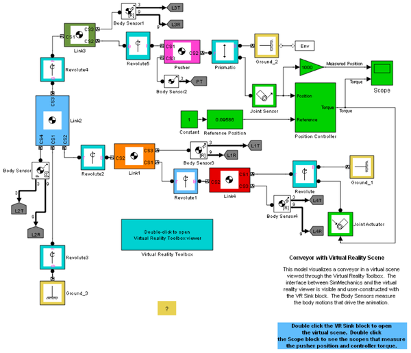
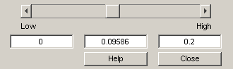

Conveyor with Virtual Reality Scene
This model visualizes a conveyor in a virtual scene viewed through the Virtual Reality Toolbox. The interface between SimMechanics and the virtual reality viewer is visible and user-constructed with the VR Sink block. The Body Sensors measure the body motions that drive the animation. Slider bars allow manual motion control.
 